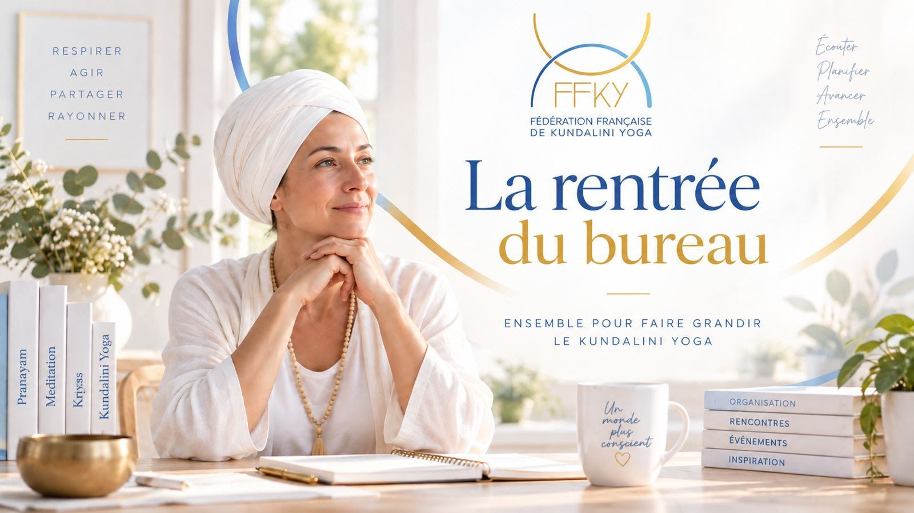

Actualités
La vie de la fédération · page 6 sur 7
Nouvelles du bureau, témoignages, portraits, livres, recettes, rendez-vous : suivez la vitalité de la sangat.
Articles 61 à 72 sur 77 · page 6 sur 7
Postuler pour les élections du nouveau Bureau de la FFKY
Lire l’article : Postuler pour les élections du nouveau Bureau de la FFKYCompte-rendu de l’Assemblée Générale de la FFKY du 11 mai 2018
Lire l’article : Compte-rendu de l’Assemblée Générale de la FFKY du 11 mai 2018Dissolution de la FFKY ou appel à candidature ?
Lire l’article : Dissolution de la FFKY ou appel à candidature ?Festival de Kundalini Yoga à La Fontaine les 9 et 10 juin 2018
Lire l’article : Festival de Kundalini Yoga à La Fontaine les 9 et 10 juin 2018Childplay Yoga : jouer au Yoga avec les enfants !
Lire l’article : Childplay Yoga : jouer au Yoga avec les enfants !Expérience de Seva à La Fontaine
Lire l’article : Expérience de Seva à La FontaineLes élections… c’est maintenant !
Lire l’article : Les élections… c’est maintenant !L’avenir de Château Anand
Lire l’article : L’avenir de Château AnandDifficultés techniques (re-adhésion, connexion, assurance…)
Lire l’article : Difficultés techniques (re-adhésion, connexion, assurance…)Joyeuses fêtes
Lire l’article : Joyeuses fêtesMettez vos cours à jour
Lire l’article : Mettez vos cours à jourSource : articles publiés sur ffky.fr (lecture publique du 27/11/2026).